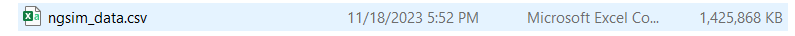
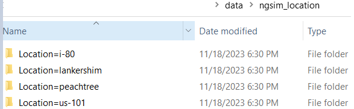
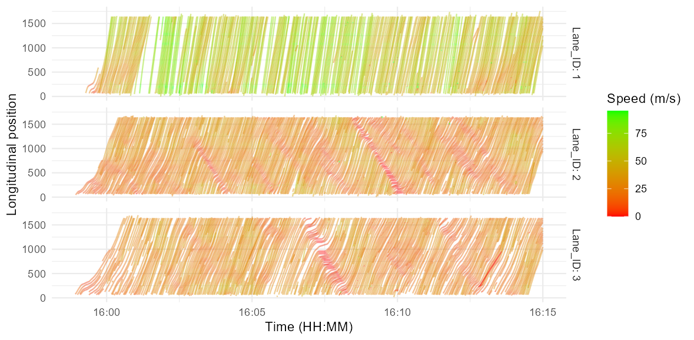

dir.create("data")
After completing this post, you will be able to:
- Programmatically download and save raw NGSIM data
- Partition the raw data by location and save as separate
parquetfiles without loading them into memory
- Create this time-space diagram:

Note: The code in this post is derived from Chapter 22 of R for Data Science book.
All code in this post is written in
R programming language.Download raw data
We begin by downloading the NGSIM data from their website. Generally, you do this by clicking the download button on the data page. In R, you can download the data as follows. First, you create a data folder in your desired location:
Next, utilize the download.file function to download the NGSIM data:
date_today <- format(Sys.Date(), "%Y%m%d")
data_url <- paste0("https://datahub.transportation.gov/api/views/8ect-6jqj/rows.csv?date=", date_today, "&accessType=DOWNLOAD")
# Download
download.file(url = data_url, destfile = "data/ngsim_data.csv")In the code chunk above, Sys.Date() provides today’s date which we name as date_today. Then data_url is the URL built with date_today as that is how the ITS hub provides access to the data. This is the URL that we then provide to the download.file function along with the location and name of the csv file.
The time to download this 1.4 GB file depends on your internet speed. It took about 10 minutes on a 60 MB/s connection I tested.

Partition NGSIM data by location
The NGSIM data has millions of rows and has a disk size of 1.4 GB! You can load all the data in R using the awesome data.table package:
library(data.table)
ngsim_data <- fread("data/ngsim_data.csv")Note that R uses both the
<- and = as assignment operators. But <- is used more frequently.Loading this data in R may be possible with good enough computer memory, but may not be a good idea due to the following reasons:
- Intensive calculations may slow down and even crash your R session when all the data is used simultaneously.
- You may be interested in analyzing only part of the data, e.g., only the Interstate-80 trajectories.
So, we use the arrow package to partition the data by location and use tools to minimize loading large parts of data in memory (all data imported in R is available in computer memory).
Open NGSIM

arrow has this open_dataset function that lets you peek inside the data without actually loading it into memory.
Hover over the annotated line numbers to see the code description.
library(arrow)
ngsim_data <- open_dataset(
sources = "data/ngsim_data.csv",
col_types = schema(Location = string()),
format = "csv"
)- 1
-
Provide the location and name of the data file.
- 2
-
Optionally provide the column types. For example, read the
Locationcolumn as a string type.
- 3
- Specify the format of the input file.
This does not read the entire dataset, but rather creates an ArrowObject that provides metadata:
ngsim_dataFileSystemDataset with 1 csv file
Vehicle_ID: int64
Frame_ID: int64
Total_Frames: int64
Global_Time: int64
Local_X: double
Local_Y: double
Global_X: double
Global_Y: double
v_length: double
v_Width: double
v_Class: int64
v_Vel: double
v_Acc: double
Lane_ID: int64
O_Zone: int64
D_Zone: int64
Int_ID: int64
Section_ID: int64
Direction: int64
Movement: int64
Preceding: int64
Following: int64
Space_Headway: double
Time_Headway: double
Location: stringHere you see several variables with their types. We can now use the Location variable to partition data.
Partition by location and save
Now we load the dplyr package to group the data by Location and then use arrow to save it.
data_by_location_folder <- "data/ngsim_location"
ngsim_data |>
dplyr::group_by(Location) |>
write_dataset(path = data_by_location_folder, format = "parquet")- 1
-
Path to the folder where you want to store files.
- 2
-
Group by the
Locationvariable.
- 3
- Save partitioned data in the specified location as a parquet file. Parquet files are column-based and are faster to read and write than csv files.
The
|> is a pipe operator in R. It means “and then”. For example, take ngsim_data and then group it by Location.Each saved file is named as part-0.parquet in its own folder:

The beauty of the above code is that new files are created and saved without loading any data into memory. So, you don’t need to wait to get to your desired data for analysis.
Let’s see the size of each file:
library(tibble)
tibble(
files = list.files(data_by_location_folder, recursive = TRUE),
size_MB = file.size(file.path(data_by_location_folder, files)) / 1024^2
)# A tibble: 4 × 2
files size_MB
<chr> <dbl>
1 Location=i-80/part-0.parquet 290.
2 Location=lankershim/part-0.parquet 118.
3 Location=peachtree/part-0.parquet 67.3
4 Location=us-101/part-0.parquet 289. These are small datasets that most computers can easily deal with.
Create a time-space diagram with Interstate-80 data
According to the official web-page, Interstate-80 (I80 from now on) data consists of vehicle trajectories collected between 4 pm - 5:30 pm on April 13, 2005.
To create a time-space diagram, we need variables for time (x-axis) and space (y-axis). Local_Y represents the longitudinal position of the front end of vehicles, so we can plot it on y-axis. However, there is only an interger encoded time variable in the data Global_Time. Therefore, the first step is to create a new column that contains the actual time.
Open the I80 data and find the time range
We start by opening the I80 dataset:
i80 <- open_dataset(paste0(data_by_location_folder, "/Location=i-80"))
i80FileSystemDataset with 1 Parquet file
Vehicle_ID: int64
Frame_ID: int64
Total_Frames: int64
Global_Time: int64
Local_X: double
Local_Y: double
Global_X: double
Global_Y: double
v_length: double
v_Width: double
v_Class: int64
v_Vel: double
v_Acc: double
Lane_ID: int64
O_Zone: int64
D_Zone: int64
Int_ID: int64
Section_ID: int64
Direction: int64
Movement: int64
Preceding: int64
Following: int64
Space_Headway: double
Time_Headway: doubleUsing the lubridate package, we create a new column actual_time:
library(dplyr)
library(lubridate)
time_range <- i80 |>
select(Global_Time) |>
collect() |>
mutate(actual_time = as_datetime(Global_Time / 1000,
origin = "1970-01-01",
tz = "America/Los_Angeles"
)) |>
pull(actual_time) |>
range()- 1
-
Select the
Global_Timecolumn without loading it.
- 2
-
Collect the selected data into memory.
- 3
-
Create the
actual_timecolumn by utilizinglubridate::as_datetime. Note that the appropriate timezone is provided.
- 4
-
Pull out the
actual_timecolumn as a vector. A vector in R is a collection of numbers.
- 5
- Find the range (min. and max.) of the time.
Let’s see the range:
time_range[1] "2005-04-13 15:58:55 PDT" "2005-04-13 17:32:14 PDT"This result indicates that the data was collected between 3:58 pm to 5:32 pm on April 13, 2005 which matches the description on the web-page.
Partition the I80 data
The description further says:
A total of 45 minutes of data are available in the full dataset, segmented into three 15-minute periods: 4:00 p.m. to 4:15 p.m.; 5:00 p.m. to 5:15 p.m.; and 5:15 p.m. to 5:30 p.m.
However, the time_range indicates that data is available for 90 minutes rather than 45 minutes. Here, we follow the description and partition the I80 data by the specified periods:
# Specify the time periods:
first_period_starts <- time_range[1]
first_period_ends <- as_datetime("2005-04-13 16:15:00", tz = "America/Los_Angeles")
second_period_starts <- as_datetime("2005-04-13 17:00:00", tz = "America/Los_Angeles")
second_period_ends <- as_datetime("2005-04-13 17:15:00", tz = "America/Los_Angeles")
third_period_ends <- time_range[2]
# Since Global_Time is an integer, convert the start and end vars to integers:
first_period_starts <- as.numeric(first_period_starts) * 1000
first_period_ends <- as.numeric(first_period_ends) * 1000
second_period_starts <- as.numeric(second_period_starts) * 1000
second_period_ends <- as.numeric(second_period_ends) * 1000
third_period_ends <- as.numeric(third_period_ends) * 1000
# Create the period column
i80 |>
mutate(period = case_when(
Global_Time >= first_period_starts & Global_Time <= first_period_ends ~ "first",
Global_Time >= second_period_starts & Global_Time <= second_period_ends ~ "second",
Global_Time > second_period_ends & Global_Time <= third_period_ends ~ "third"
)) |>
group_by(period) |>
write_dataset(path = "data/I80", format = "parquet")The code above uses dplyr::case_when inside a mutate statement to create a new column that indicates the time period based on the specified start & end of each time period. Note that we did not use the actual_time column here because it does not exist in the saved parquet files. This column was created on the fly when the time_range variable was created.
This creates four, not three, files as expected:

Time-space diagram
Let’s create a time-space diagram of the first period in I80 dataset. We see that I80 has following lanes:
open_dataset("data/I80") |>
pull(Lane_ID, as_vector = TRUE) |>
unique()[1] 5 6 2 3 4 1 7For our diagram, we limit the data to the first three lanes only:
i80_filtered <- open_dataset("data/I80") |>
filter(
period %in% c("first"),
Lane_ID %in% c(1, 2, 3)
) |>
collect() |>
mutate(actual_time = as_datetime(Global_Time / 1000,
origin = "1970-01-01",
tz = "America/Los_Angeles"
)) |>
arrange(Vehicle_ID, actual_time)- 1
-
Open partitioned I80 dataset.
- 2
-
Filter the data to contain trajectories in lanes 1, 2, and 3 during the first period only.
- 3
-
Sort by
Vehicle_IDandactual_time.
Now, we use the ggplot2 package to create the diagram:
library(ggplot2)
time_space_diagram_i80 <- i80_filtered |>
ggplot() +
geom_path(
aes(
x = actual_time,
y = Local_Y,
color = v_Vel,
group = Vehicle_ID
),
alpha = 0.5
) +
scale_color_gradient(low = "red", high = "green") +
facet_grid(Lane_ID ~ ., labeller = "label_both") +
labs(
x = "Time (HH:MM)",
y = "Longitudinal position",
color = "Speed (m/s)"
) +
theme_minimal()
time_space_diagram_i80- 1
-
Start by calling the
ggplotfunction.
- 2
-
Use
geom_pathto create continuous lines.
- 3
-
Time on x-axis.
- 4
-
Longitudinal position (feet) on y-axis.
- 5
-
Colour by vehicle speed.
- 6
-
Create a separate line for each vehicle by specifying
groupasVehicle_ID. 7. Make the lines 50% transparent.
- 7
-
Use red and green color scale.
- 8
-
Create small but connected plots (small multiples) for each lane.
- 9
-
Add labels to axes and colour legend.
- 10
- Use the minimal theme to declutter the plot.

ggplot2 has this handy function ggsave to save the plotted image to disk:
ggsave(time_space_diagram_i80,
path = "time_space_diagram.png",
width = 11,
height = 8,
units = "in",
dpi = 30)- 1
-
Specify the plot that you want to save.
- 2
-
Provide the full path with file name where you want to save the plotted image.
- 3
-
Specify the width of plotted image.
- 4
-
Specify the height of plotted image.
- 5
-
Specify the units of width and height.
"in"means inches.
- 6
- Specify the resolution of the image. Higher resolution makes crisper images but takes longer to plot than lower resolution.
And we are done! Believe it or not, saving this plot took longer than any other step in this post.
Reuse
Citation
BibTeX citation:
@online{durrani2024,
author = {Durrani, Umair},
title = {Import {Data}},
date = {2024-01-01},
langid = {en}
}
For attribution, please cite this work as:
Durrani, Umair. 2024. “Import Data.” January 1, 2024.